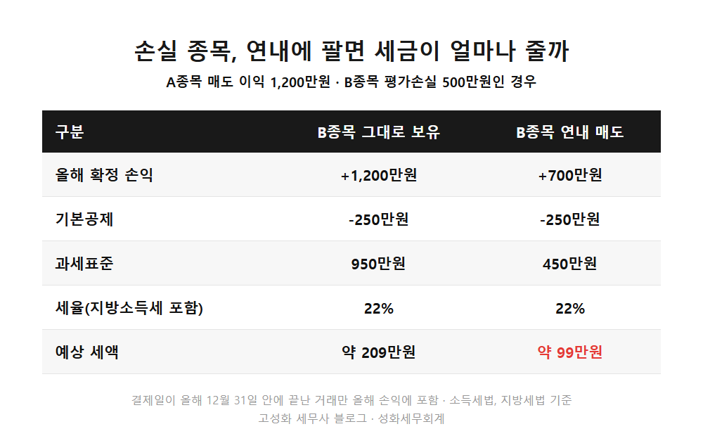
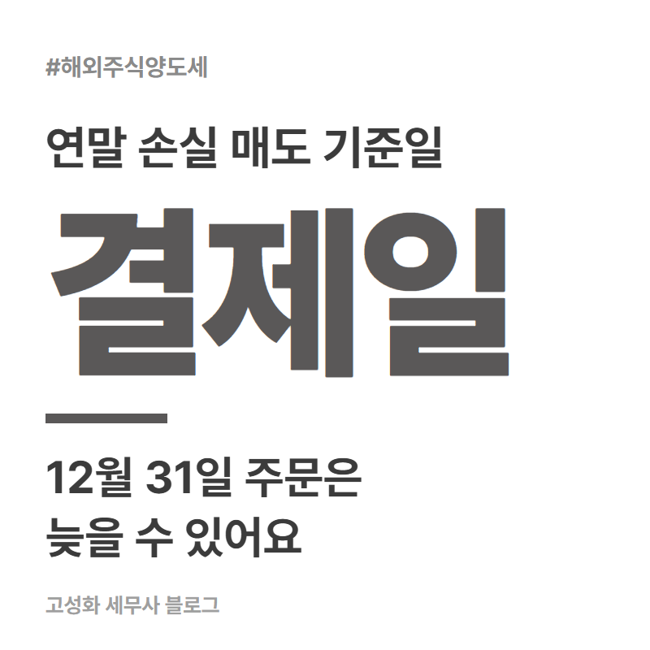
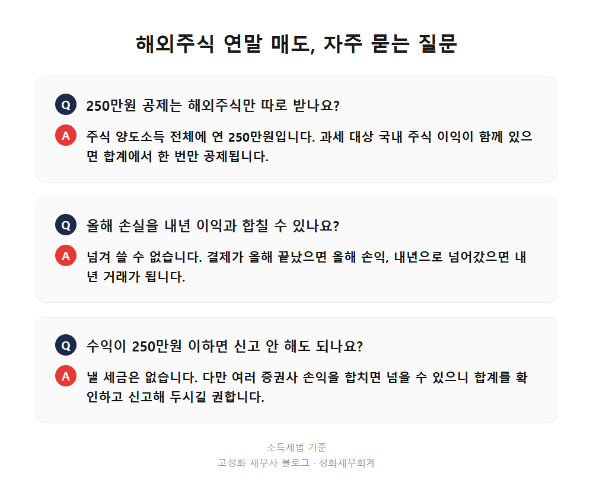

해외주식 연말 손실 매도 양도세, 결제일이 기준입니다

해외주식 양도세는 1월 1일부터 12월 31일까지 판 주식의 이익과 손실을 모두 합쳐서 계산합니다. 그래서 올해 수익이 난 종목이 있다면, 손실 중인 종목을 연내에 팔아 손실을 확정하면 세금이 줄어듭니다. 다만 "올해 판 것"은 주문을 넣은 날이 아니라 대금이 결제된 날로 따지기 때문에, 12월 31일에 매도 버튼을 눌러서는 늦을 수 있습니다.
이 글을 보고 계신 분은 ① 올해 미국 주식으로 수익을 꽤 내셨거나 ② 반대로 물려 있는 종목이 있어 정리를 고민 중이시거나 ③ 연말에 팔면 올해로 잡히는지 헷갈리시는 분일 겁니다. 세 경우 모두 12월이 되기 전에 한 번 계산해 보시는 게 좋습니다.
- 해외주식 양도세, 1년 치 손익을 합쳐서 계산합니다
- 연말 손실 매도, 결제일 기준을 놓치면 내년으로 넘어갑니다
- 혼자 계산할 때 자주 빠뜨리는 것
한눈에 보기



자주 묻는 질문
250만원 공제는 해외주식만 따로 받나요?
주식 양도소득 전체에 연 250만원입니다. 해외주식 이익과 과세 대상 국내 주식 이익이 함께 있다면 그 합계에서 한 번만 공제됩니다.
12월에 판 손실을 내년 이익과 합칠 수 있나요?
결제가 올해 안에 끝났다면 올해 손익으로 잡히고, 내년으로 넘겨 쓸 수는 없습니다. 반대로 결제가 내년으로 넘어갔다면 내년 거래가 됩니다.
수익이 250만원 이하면 신고 안 해도 되나요?
낼 세금은 없습니다. 다만 여러 증권사 손익을 합치면 넘는 경우도 있어서, 매도 내역이 있다면 합계를 확인하고 신고해 두시길 권합니다.
정리하면
해외주식 연말 손실 매도는 1년 치 이익과 손실을 합치는 구조를 이용하는 방법입니다. 핵심은 결제일 기준이라 12월 31일 매도는 늦을 수 있다는 점, 그리고 올해 손실은 올해 안에서만 쓸 수 있다는 점입니다.
다만 내 경우에 얼마를 팔아야 맞는지는 증권사별 손익, 환율, 국내 주식 포함 여부까지 합쳐봐야 나옵니다. 어디서부터 정리할지 막막하시면 증권사별 거래내역만 들고 오셔도 됩니다. 12월이 오기 전에 한 번 같이 맞춰보시죠.
본문 전체와 근거 조문은 블로그에서 확인하실 수 있습니다.